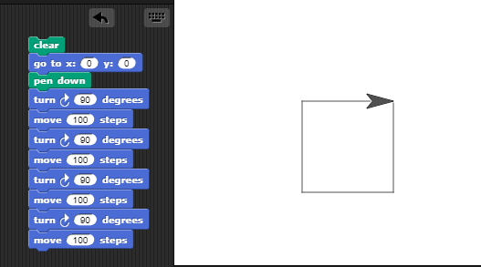
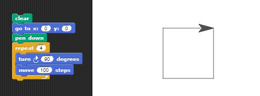
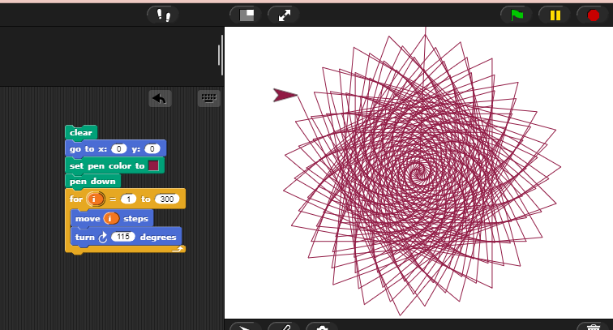

| Scratch | Snap | Blockly | Python | Primer | Viri |
Za primer si bomo pogledali, kako s pomočjo Snapa lahko uvedemo zanke pri pouku računalništva.
Po temu, ko učenci že znajo osnove Snapa, jim pokažemo, kako narisati štirikotnik. Ko smo postavljeni na sredini risalne površine, ta algoritem razložimo kot zaporedje korakov: premakni se za n korakov naprej -> obrni se za 90°, in to ponavljamo, dokler ne dobimo pravokotnika. Napišemo kodo kot na spodnji sliki:
Marsikateremu učencu se bo zdelo to zamudno. Pokažemo jim zanko (med oranžnimi bloki), ki nam bo kodo, ki se ponavlja, izvajala i-krat.
Kasneje pa lahko s pomočjo različnih zank, ki jih Snap ponuja ustvarjamo še druge vzorce.
